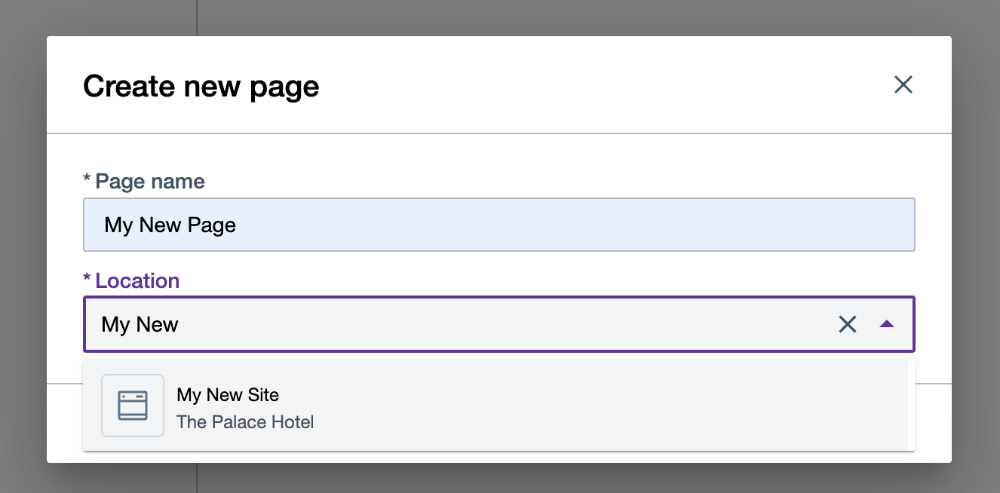

Create sites and pages
The following provides steps on how to browse your site and its pages, create new ones, and update or delete metadata using HCL Design Studio (Beta).
Prerequisite
Design Studio (Beta) is available for evaluation use and may not be used in production. It may be installed and configured to HCL Digital Experience 9.5 container release update CF196 or higher. See instructions to install Design Studio (Beta) in this Help Center topic: Install Design Studio (Beta).
Design Studio (Beta) is accessible from the Practitioner Studio interface, after image configuration to your HCL Digital Experience 9.5 CF196 or higher deployments.
The demo site
Included in HCL Digital Experience 9.5 CF196 and higher deployments, Palace Hotel is a demonstration site for a fictional organization. The Palace Hotel demonstration site leverages in-line editing and site content authoring and management tools.
The home page of the provided Palace Hotel demo site is the default page. This site page is rendered when the site render URL is opened in a browser.
It is not recommended to reuse Palace Hotel for anything but a demonstration site. Its intent is to demonstrate the use of Design Studio (Beta) features.
The Palace Hotel demo will also be updated in future releases in line with the latest HCL Design Studio (Beta) features. As such, any changes saved using the Palace Demo site will disappear.
Create a new site
The option to create a new site is now available in HCL Digital Experience 9.5 CF198 and higher releases. Follow the steps to create a new site using Design Studio (Beta).
-
From the Sites overview, click the Create button on the far right, and choose Site.

-
Enter the name of the library where you want to create your new site in and select from the autosuggest options the name of that library.

-
Click Create and edit to create your new site and open it in the editor, or Create to create your new site and stay in the Sites overview.
The new site created using Design Studio (Beta) comes with a single page set as the default home page.

Update site metadata
At the moment, users can only edit the name of the site. Other site properties are updated through other ways that are automatically handled by Design Studio (Beta).
-
From Sites overview, choose a site and then click the overflow (3-dot) menu icon to display options.
-
Click Properties to pop up the panel menu of the selected site.

-
Once the Properties panel is visible, update the editable fields of the site information.

-
Click Save to keep your changes.
Delete a site
In HCL Digital Experience 9.5 CF200, the option to delete a site on the Sites overview is introduced.
Note
Users cannot delete a site in HCL Digital Experience 9.5 CF199 and lower deployments.
-
In the Sites overview, hover to the site you want to delete until it shows the overflow menu icon.
-
Click the overflow menu icon as shown below to access the site menu options, and choose Delete.

-
A prompt will appear to confirm if you want to delete the site. Click Delete to proceed on deleting the site OR Cancel if you want to abort instead.
-
A notification will appear once the site is deleted. If the deletion process fails, the notification will show the reason for the failure.
Important
Once a site is deleted, you can no longer undo the action.

Create a new page from Sites overview
Follow the steps to create a new page within your newly-created site using HCL Digital Experience 9.5 Design Studio (Beta).
-
From Sites overview, click the Create button, and then Page.

-
Enter the name of the new page in the Page name field. In the site page Location field, type and select the site or page as the location where you want to create the new page under.

-
Click Create and edit to create your new page and open it in the Page editor, or Create to create your new page and stay in the Sites overview.
Assign a location when creating a page
The option to choose a location when creating a new page is now available in HCL Digital Experience 9.5 CF198 and higher releases.
There are two ways to choose a location when creating a new page from Sites overview:
- navigate to your target location; or
- entering the name of the location and choosing an option from the auto-suggest list.
Choosing location by navigation
-
Navigate to the target site location. In the Palace Hotel demo site example below, you can create a new page under Profile Page:

-
Type in the name of the new page. You can choose the pre-populated location last selected in Sites overview, or type in the name of the new location, as shown below:

-
Click Create or Create and edit to create and save the new page in the selected site location.
From auto-suggest list
Note
There may be more than one page that matches the name of the target location. Use the address displayed below each option as a hint to differentiate the selected location from other matches.
-
Follow the steps indicated in Option 1 (Choosing location by navigation).
-
In the Location field, enter the location keyword and choose from the auto-suggest list that matches the target location.

-
Click Create or Create and edit to create and save the new page in the selected site location.

Create a child or sibling page
An HCL Digital Experience site is a hierarchical site type with the following levels:
- A parent page, which is the top-level page (e.g. Home Page);
- A child page, which exists one level below a parent page or a child page above it;
- A sibling page, which exists on the same level of a child page
In HCL Digital Experience 9.5 CF200, shortcuts to create a child or sibling page are introduced.
In the example below, Design Studio (Beta) provides a shortcut whenever you create a new site:

You can also pre-fill the location field when creating a new child or sibling page.
There are four other ways to create a new child or sibling page using Design Studio (Beta).
Create a child or sibling page for any page via the Pages panel
-
On the Page editor interface of the page you currently opened, click the Pages (multiple pages) icon. This action pops out the Pages panel.
-
On the Pages panel, click the Create a new blank page icon, then choose either Create sibling page or Create child page as shown below.

-
Enter a name for your new child or sibling page.
-
The Location field will initially be pre-filled. You can delete the pre-filled Location and enter a new location to assign a new one.
- If you select Create sibling page, the Location field is pre-filled with the location of the current page.
- If you select Create child page, the Location field is pre-filled with the current page itself.
You can always delete the pre-filled Location and enter your desired location.
-
Click on Create to create your new child or sibling page.
Create a child or sibling page for the page currently open in Page editor
-
On the Page editor interface of the page you currently opened, click the Pages (multiple pages) icon. This action pops out the Pages panel.
-
On the Pages panel, hover your cursor on the right side of the selected page until the overflow menu shows.
-
Click the overflow menu, then choose either Create sibling page or Create child page as shown below.

-
Enter a name for your new child or sibling page.
-
Keep the pre-filled Location as is or enter a new location to assign a new one.
-
Click on Create to create your new child or sibling page.
Create a child or sibling page for any page displayed in the Sites overview
-
On the Sites overview, hover your cursor on the right side of the selected page until the overflow menu shows.
-
Click the overflow menu, then choose either Create sibling page or Create child page as shown below.

-
Keep the pre-filled Location as is or enter a new location to assign a new one.
-
Click on Create to create your new child or sibling page, or Create and Edit to create your new child or sibling page and open it on the Page editor.
Create a child page for any site displayed in the Sites overview
-
On the Sites overview, hover your cursor on the right side of a selected site until the overflow menu shows.
-
Click the overflow menu, then select Create new page.

-
Keep the pre-filled Location as is or enter a new location to assign a new one.
-
Click on Create to create your new page, or Create and Edit to create your new child or sibling page and open it on the Page editor.
Choose a home page
The first page under a site is rendered as a home page by default. You can assign a different page as your new home page.
There are three ways to set a home page.
From Sites Overview > Page menu
-
Navigate to the target page you want to set as the new home page.
-
Hover your pointer on the page, then click the overflow (3-dot) menu icon.
-
Click Set as homepage.

-
A dialog box appears. Click Confirm to set the page as the new home page and dismiss the dialog, or click Cancel to abort the action.
From the Sites Overview > Page information panel
-
Navigate to the target page you want to set as the new home page.
-
Hover your pointer on the page, then click the overflow (3-dot) menu icon.
-
Click Properties.

-
The page's information panel pops out on the right. Click More, then Set as homepage.

-
A dialog box appears. Click Confirm to set the page as the new homepage and dismiss the dialog, or click Cancel to abort the action.
From the Page Editor
-
On the Page editor, click the Pages (multiple pages) icon. This action pops out the Pages panel.
-
On the selected page, hover and click the overflow (3-dot) menu icon, then select Set as homepage.

-
A dialog box appears. Click Set as homepage to set the page as the new homepage and dismiss the dialog, or click Cancel to abort the action.
Get information about a page
- On the Design Studio (Beta) Sites overview, select a site then navigate to your target page.
-
Click the overflow (3-dot) menu icon to display options, then click Properties.

-
The Properties panel detailing page information and applicable actions pops out on the right.
Update page metadata
As of HCL Digital Experience 9.5 CF198 and higher deployments, users can only directly edit the name of a selected page. Other page properties are updated through other ways that are automatically handled by Design Studio (Beta).
There are two ways to update your page name:
From Sites overview
-
See steps above on how to Get information about a page.
-
Once the information panel is visible, update the editable fields of the page information.

-
Click Save to keep your changes.
In Page editor
-
Open the Pages panel on the left and navigate to the selected page that you want to update.
-
Hover your pointer on the page, then click the overflow (3-dot) menu icon.
-
Click Page properties as shown below.

-
On the Page properties panel, edit the page name.

-
Click Save to save your changes.
-
Click Cancel, press Esc, or click outside the panel to discard your changes.
Delete a page
There are three ways to delete a page in the new Design Studio (Beta).
From Sites overview > Page overflow menu
-
On the Design Studio (Beta) Sites overview, select the site, then the page you want to delete.
-
Hover your pointer on the page, then click the overflow (3-dot) menu icon.
-
Click Delete.

-
A confirmation dialog prompts you to confirm or cancel deleting the page.

-
Click Delete to continue the cancellation, or Cancel to abort.
From the Sites overview > Page information panel
-
Access the page information panel as described in Get information about a page.
-
Click Delete to delete the selected page.
-
A confirmation dialog prompts you to confirm or cancel deleting the page.
-
Click Delete to continue the cancellation, or Cancel to not continue with the deletion.
From the Page Editor
-
On the Page editor, click the Pages (multiple pages) icon. This action pops out the Pages panel.
-
Hover and click the overflow (3-dot) menu icon on the selected page.
-
A dialog box appears. Click Delete to delete the selected page and dismiss the dialog, or click Cancel to abort the action.